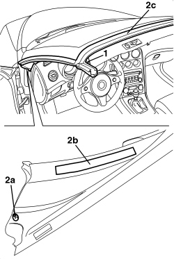
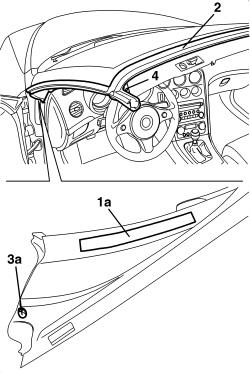

7030H35 HOOD FRONT SEAL - R.R.
- Path
- Procedures > 70 FITTINGS > 7030 SUN ROOF/GLASS PANEL > 7030H AUTOMATICALLY OPERATED HOOD > 7030H35 HOOD FRONT SEAL - R.R.
- Kind
- repair procedure (removal / refitting; the operation number is the code)
- Applies to
- engines: 2.2 JTS, 3.2 JTS; all production periods
- Interactive page
- https://sloeber94.github.io/elrnDB-aBrrSpdr/en/#/946004097
Applies to: engines: 2.2 JTS, 3.2 JTS; all production periods
 Removing
Removing
 Refitting
RefittingOp. 7040H30 FRONT PILLAR TRIM (ONE), LEFT OR RIGHT - R.R.
Op. 7065C34 SUN BLIND (ONE), LEFT OR RIGHT - R.R.
Op. 7040E40 FRONT COURTESY LIGHT - R.R.
Op. 7040H24 WINDSCREEN UPPER TRIM - R.R.
Op. 7030H49 MOULDING FOR HOOD FRONT SUPPORT - R.R.
1. Working on both sides of the vehicle, undo the seal fixing bolts.
2. Working on both sides of the vehicle, release the inner retainers (2a) and the adhesive stips (2b), then remove the hood front seal (2c) from its housing.

Applies to: engines: 2.2 JTS, 3.2 JTS; all production periods
Refitting
Removing- Check that the front hood seal is not damaged.
1. Working on both sides of the vehicle, clean and degrease the area of the bodywork where the adhesive strip (1a) is stuck using heptane.
2. Place the hood front seal in position.
3. Attach the adhesive strips (1a) and attach the retainers (3a).
4. Tighten the side bolts.

Applies to: engines: 2.2 JTS, 3.2 JTS; all production periods
Op. 7030H49 MOULDING FOR HOOD FRONT SUPPORT - R.R.
Op. 7040H24 WINDSCREEN UPPER TRIM - R.R.
Op. 7040E40 FRONT COURTESY LIGHT - R.R.
Topics linked from this page (5)
- 7030H49 MOULDING FOR HOOD FRONT SUPPORT - R.R.
- 7040E40 FRONT COURTESY LIGHT - R.R.
- 7040H24 WINDSCREEN UPPER TRIM - R.R.
- 7040H30 FRONT PILLAR TRIM (ONE), LEFT OR RIGHT - R.R.
- 7065C34 SUN BLIND (ONE), LEFT OR RIGHT - R.R.